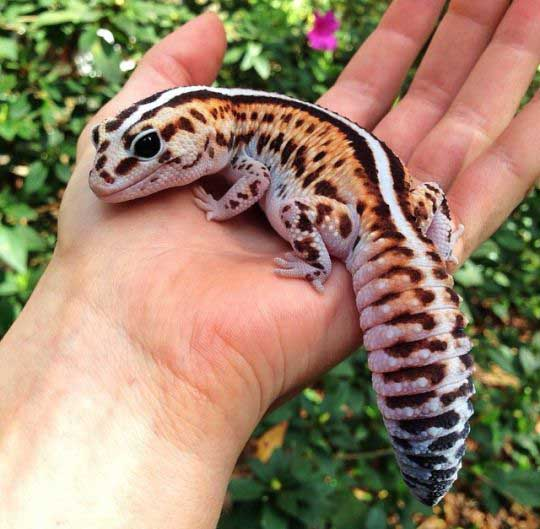

Fat Tailed Gecko
The African fat tailed gecko is a ground-dwelling species of gecko from West Africa and Cameroon.

frican fat-tailed geckos have a primarily insectivorous diet, feeding on various kinds of insects and other invertebrates within their habitats, such as worms, crickets, possibly beetles or cockroaches, etc.